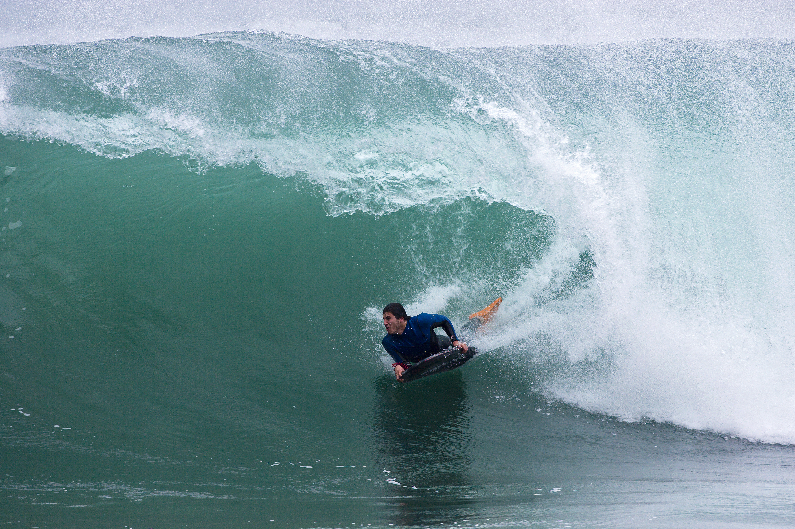
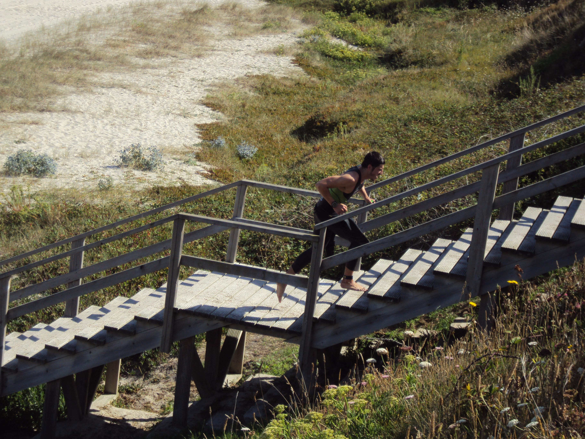
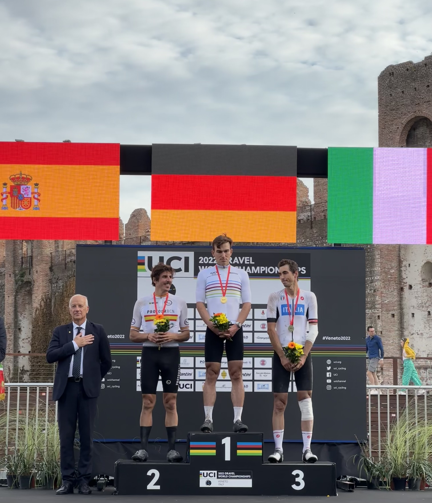

Surfen
Die Sportart, mit der meine Beziehung zum Ozean begann.

Seit über einem Jahrzehnt entwickle ich komplexe Produkte. Angetrieben von Neugier und dem Wunsch zu verstehen, wie Dinge funktionieren.

Ich bin ausgebildeter Ingenieur und ein Mensch mit einer ausgeprägten Neugier und dem ständigen Wunsch, Neues zu lernen.
Seit mehr als einem Jahrzehnt arbeite ich in der Produktentwicklung der Automobilindustrie. Dabei verbinde ich technisches Fachwissen, internationale Erfahrung und die Zusammenarbeit mit interdisziplinären Teams.
Sport war schon immer ein fester Bestandteil meines Lebens: vom Surfen und Triathlon bis zu meiner heutigen Leidenschaft für den Radsport. Er hat mich Disziplin, Ausdauer und die Bedeutung langfristiger Entwicklung gelehrt.
Heute verbinde ich meine industrielle Erfahrung mit der Lehre und bewahre dabei die Motivation, die mich schon immer begleitet hat: kontinuierlich weiterzulernen.
Herkunft
Industrieingenieurwesen
Internationale Erfahrung
BMW Group
Lehre und neue Projekte
Ein beruflicher Weg, geprägt von Ingenieurwesen, Produktentwicklung, Automobilindustrie und Lehre.
Technische Ausbildung und erste Schritte in der Produktentwicklung.
Erste Berufserfahrung in einem internationalen Umfeld.
Beginn meines beruflichen Weges in der deutschen Automobilindustrie.
Mehr als ein Jahrzehnt Mitarbeit an Entwicklungsprojekten für die BMW Group.
Lehre an Universitäten und Business Schools.
Mehr als zehn Jahre Mitarbeit an Entwicklungsprojekten für die BMW Group, mit Schwerpunkt auf der Entwicklung von Interieurkomponenten – von den ersten Design- und Entwicklungsphasen bis zur Industrialisierung und Serienproduktion.
In dieser Zeit arbeitete ich mit internationalen Teams aus Entwicklung, Design, Qualität, Produktion und Marketing zusammen und war an mehreren Fahrzeuggenerationen von BMW und MINI beteiligt.
Meine Tätigkeit ging über die technische Entwicklung von Bauteilen hinaus. Ich arbeitete außerdem eng mit Marketingteams zusammen, um technische Entscheidungen und Lösungen verständlich aufzubereiten und gegenüber Kunden klar zu kommunizieren.
Entwicklung von Interieurkomponenten, insbesondere Cockpit- und Türverkleidungssystemen.

Entwicklung von Cockpitkomponenten und Mittelkonsolensystemen.

Entwicklung von Cockpitkomponenten sowie technische Koordination während der verschiedenen Projektphasen.

Entwicklung von Türverkleidungssystemen und technische Begleitung des Projekts von der Konstruktion bis zur Serienproduktion.

Entwicklung von Türverkleidungssystemen sowie Koordination mit Lieferanten und interdisziplinären Teams.

Mitarbeit an der Cockpitentwicklung und an der technischen Definition von Interieurkomponenten.

BUSINESS & EDUCATION
Heute verbinde ich meine berufliche Tätigkeit mit der Lehre an Universitäten und Business Schools. Dabei unterrichte ich Themen aus den Bereichen Wirtschaft, Marketing und Innovation.

Meine Erfahrung in internationalen Projekten und die Zusammenarbeit mit technischen Teams sowie mit Business- und Marketingbereichen ermöglichen es mir, eine praxisnahe Perspektive auf die Arbeitsweise von Unternehmen in den Unterricht einzubringen.
In meinen Lehrveranstaltungen verbinde ich theoretische Konzepte mit realen Situationen und fördere Beteiligung, Analyse und den Austausch unterschiedlicher Perspektiven.
Unternehmen, Strategie und Verständnis des beruflichen Umfelds.
Produkt, Kunde, Kommunikation und Wertschöpfung.
Neue Ideen, Problemlösung und praktische Umsetzung.
AUSSERHALB DER ARBEIT

Die Sportart, mit der meine Beziehung zum Ozean begann.

Jahre voller Training, Wettkämpfe und vieler Kilometer.

Eine Sportart, die mir ermöglicht hat, an Wettkämpfen teilzunehmen, zu reisen und Erfahrungen zu sammeln, die ich mir früher kaum hätte vorstellen können.

Wenn Sie sich über Ingenieurwesen, Automobilentwicklung, Business Education, Radsport oder einfach über neue Ideen austauschen möchten, freue ich mich auf Ihre Nachricht.
Barcelona · Spanien